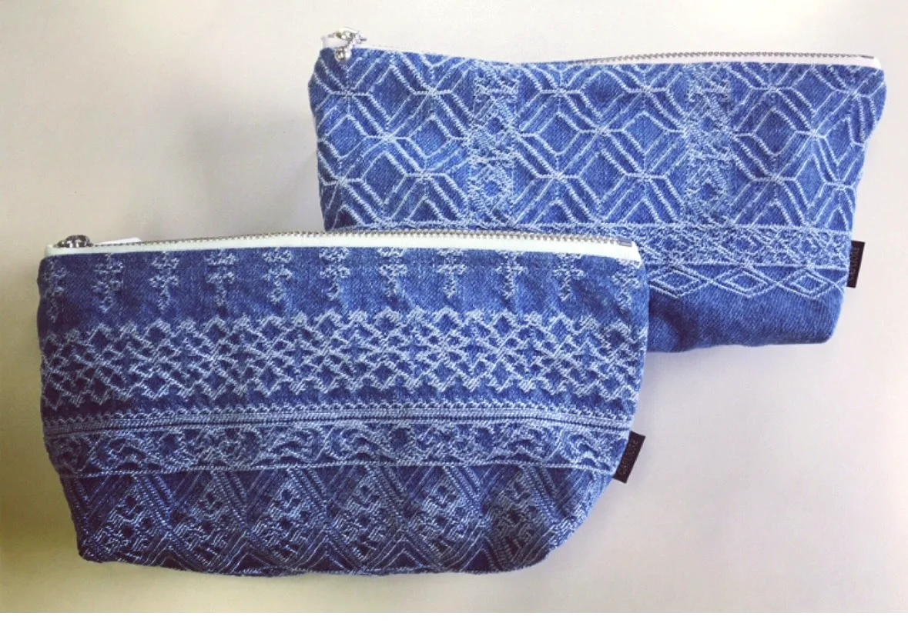
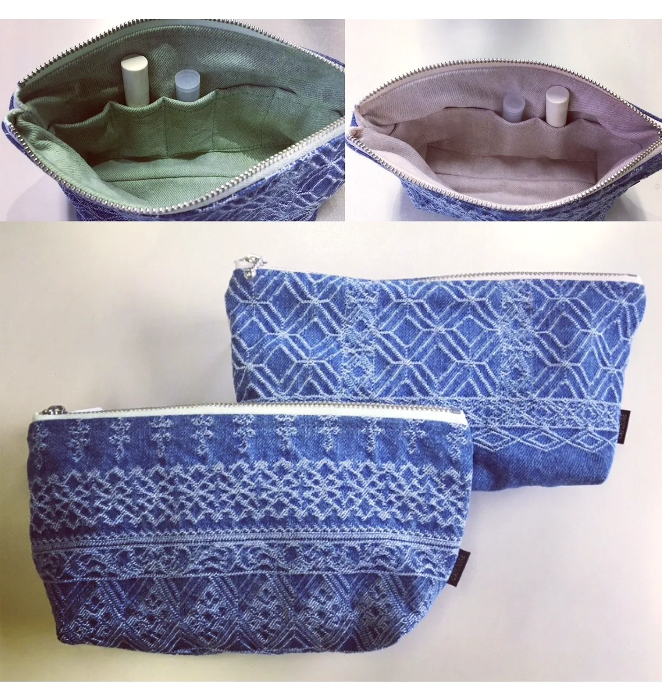
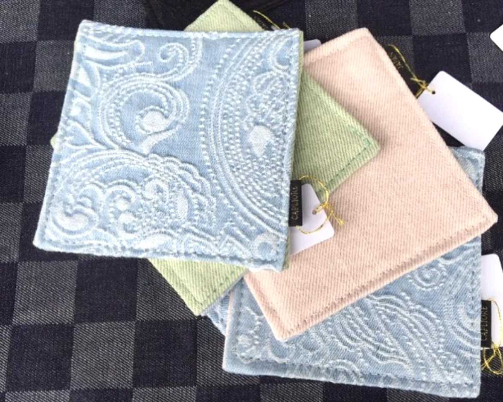
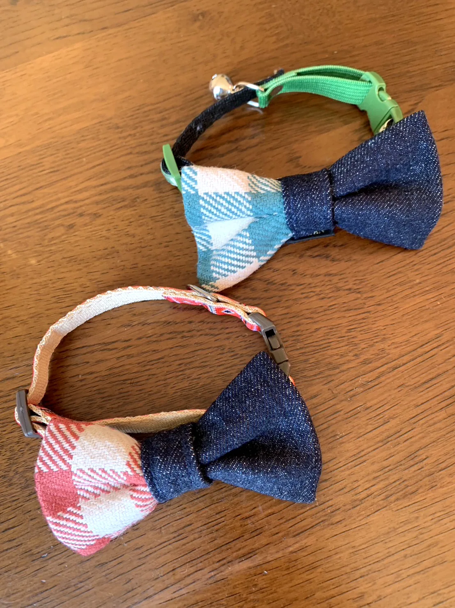
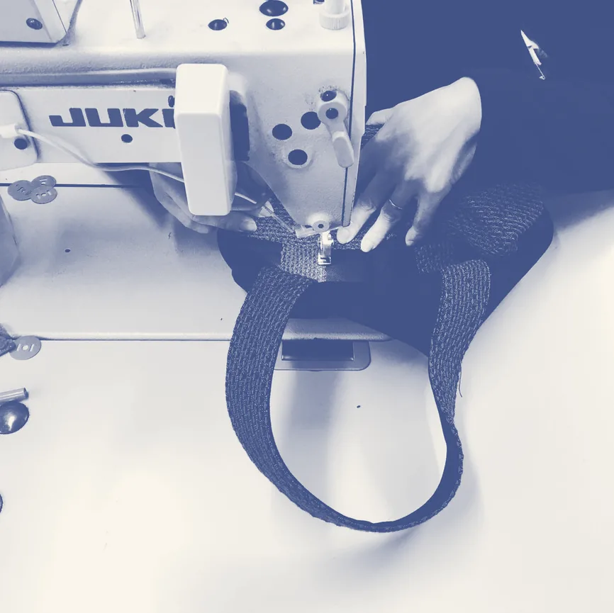
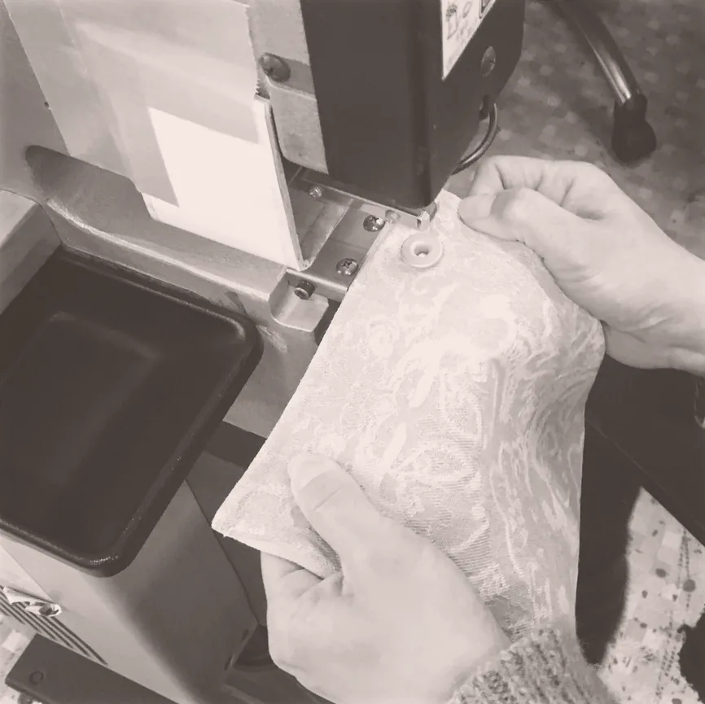
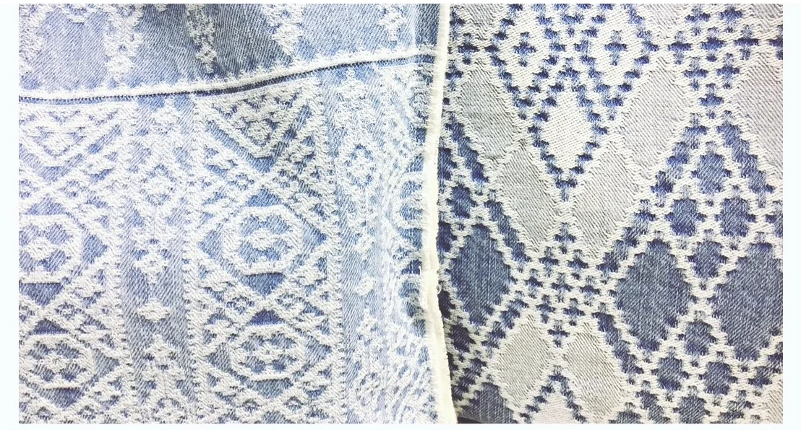
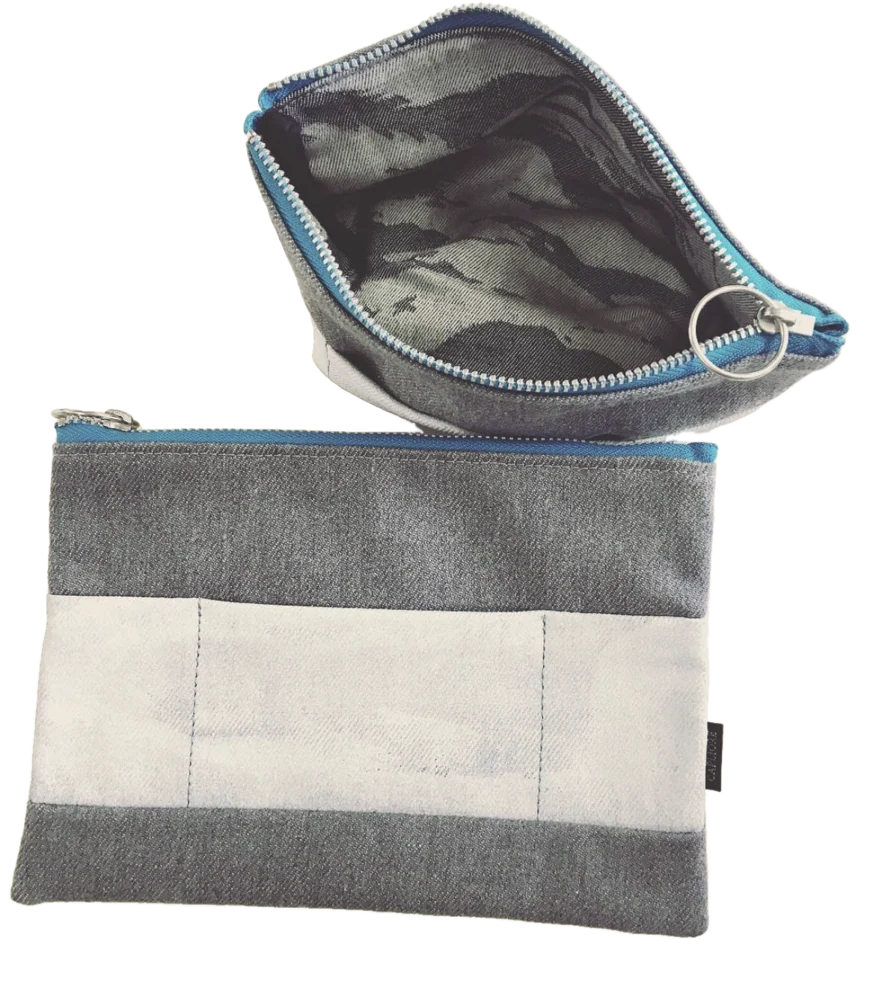

Capriore
昼下がりの青を、
デニムで仕立てる。
The blue of an afternoon, sewn in denim.
Caprioreは、デニムとジャカード織りの生地でつくる雑貨ブランドです。広島県福山市で、一点ずつ縫っています。
コレクションを見る
午後二時。
白い壁に、青い影が落ちる。
陽射しがいちばん強い時間の、海と空と影の青。Caprioreはその青を、デニムとジャカード織りの生地に重ねました。毎日使うポーチやバッグ、髪を結ぶリボンに仕立てています。
Two in the afternoon. A blue shadow falls on a white wall. Capriore brings that blue to denim and jacquard, made into pouches, bags and ribbons for every day.
Collection
コレクション







Fabric and making
生地とものづくり



- 素材Fabric
- デニムとジャカード織り。ジャカード織りは、柄をプリントではなく織りで表した生地です。Denim and jacquard. In jacquard, the pattern is woven in, not printed.
- 産地Origin
- 広島県福山市で縫製しています。日本製です。Sewn in Fukuyama, Hiroshima. Made in Japan.
- つくりMaking
- 一点もの、または少量生産です。柄の出かたや生地の組み合わせは、一点ごとに違います。One of a kind or made in small batches. No two pieces show the pattern in quite the same way.
Questions
よくある質問
Caprioreはどんなブランドですか。
昼下がりの青をイメージした雑貨ブランドです。デニムとジャカード織りの生地で、ポーチ、バッグ、リボンヘアゴムなどをつくっています。
どこでつくっていますか。
広島県福山市で縫製しています。日本製です。
同じ柄のものは手に入りますか。
一点もの、または少量生産のため、同じ柄をご用意できない場合があります。在庫はInstagramのDMでお尋ねください。
購入や問い合わせはどうすればいいですか。
InstagramのDMで受け付けています。気になる商品の写真や名前を添えてお送りください。
Say hello
商品のこと、在庫のこと、購入のご相談は、InstagramのDMでお気軽にどうぞ。
Ask about a piece, stock or an order by direct message on Instagram.
InstagramでDMを送る